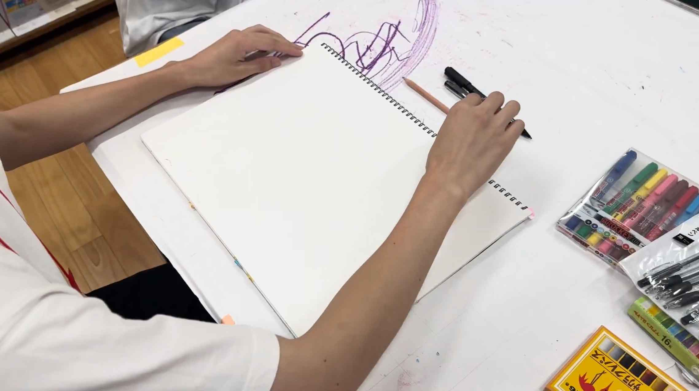
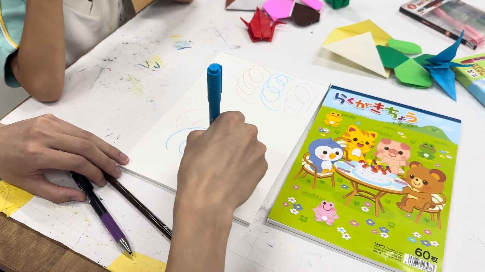

何で書いた!?ゲーム
ゲームのきほん
- 何をする？：筆記用具で文字や図形を書き、書いた音を聞いてどの筆記用具で書いたかを当てるゲーム
- 対象年齢：全年齢対象
- プレイ人数：２人推奨、複数人も可
- プレイ時間：３〜5分
準備するもの
- 鉛筆、マーカーペン、クレヨンなど複数(3つ以上)の筆記用具を用意する。
- 筆記のための紙
遊び方


- 手元に複数の筆記具と紙を用意し、書く人と聞く人に分かれて聞く方は目を瞑る。
- 書く人は3つの筆記具を選び順番に字や図形を書く。それぞれの書く時間は3秒とする。
- 聞く人は目を瞑った状態でどの順番で書いたかを聞き取り、どの筆記具で書いたかを順番通りに答える。
- 全員目を開いて、順番通りに答えることができたらチャレンジ成功！
- 役割を変え、1〜4を繰り返す。
楽しく遊ぶためのヒント
- 筆記の音が聞こえやすいように机など書きやすいところで行う。
- なるべく静かな環境で聞くことに集中できるようにする。
- 事前にそれぞれどんな音がするのか確認しておくと聴き分けやすくなる。